Ev rutinleri, ebeveynin davranış kayıtları, seanslar ve raporlar tek panelde. Aile Moyo Ebeveyn'den kaydeder; siz takip eder, raporu aileye gönderirsiniz.
Rutini siz önerirsiniz, ebeveyn evde uygular ve kaydeder. Takibi hatırladıklarınızla değil, evden gelen kayıtlarla yaparsınız.
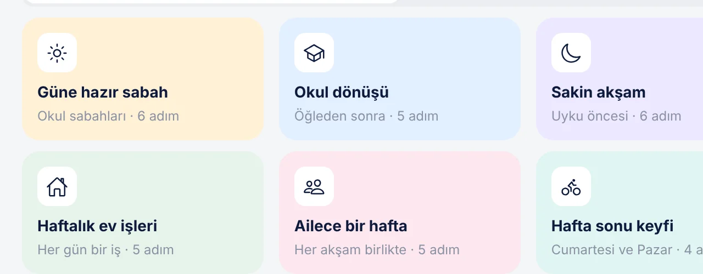
Moyo Mercek
Rutini önerirsiniz
Hazır rutinlerden birini seçer ya da kendi adımlarınızı yazar, aileye önerirsiniz; eklemek ebeveynin kararıdır.
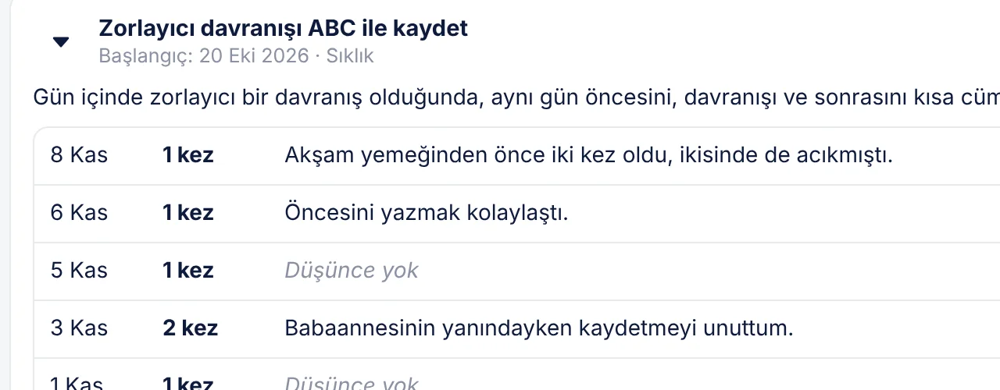
Moyo Ebeveyn→ve Moyo Mercek
Ebeveyn evde uygular, kaydeder
Rutin adımlarını onaylar, davranış kaydı tutar: ne oldu, hangi strateji denendi, çocuk nasıl tepki verdi.
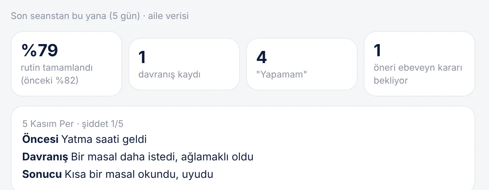
Moyo Mercek
Seansa kayıtlarla gelirsiniz
Seansı açınca son seanstan bu yana evden gelenler özet hâlinde önünüzde; sonraki adımı bu kayıtlara bakarak seçersiniz.
Nasıl çalışır
Platform Nasıl Çalışır?
Moyo Mercek → Moyo Ebeveyn
Aileyi davet edin, ebeveyn onaylasın
Ebeveynin e-postasını yazarsınız, davet sistemden gider. Ebeveyn Moyo Ebeveyn'de paylaşacağı çocuğu seçip onaylar. Veri yalnızca ebeveynin izniyle sizinle paylaşılır; ebeveyn paylaşımı dilediği an durdurur.
Moyo MercekMoyo Ebeveyn
SizEbeveyn
Aileyi davet et
Ebeveynin e-postasıayse@ornek.com
Çocuğun adıNazlı · 6–8 yaş
E-posta gönder
EÖ
Elif ÖrnekUzm. Klinik Psikolog
Nazlı · 8 yaş
Arven · 6 yaş
Onayla ve paylaş
Dilediğin an durdurabilirsin
Moyo Mercek · sizin panelinizde
Rutini önerin, haftayı tabloda görün
Çocuğun yaşına uygun hazır rutinlerden birini seçer, adımlarını ve saatlerini düzenler, aileye önerirsiniz; eklemek ebeveynin kararıdır. Ebeveynin onayladığı her adım haftalık tabloya gelir: yapılan, "Yapamam" denen, kaydı olmayan.
Moyo MercekMoyo Ebeveyn
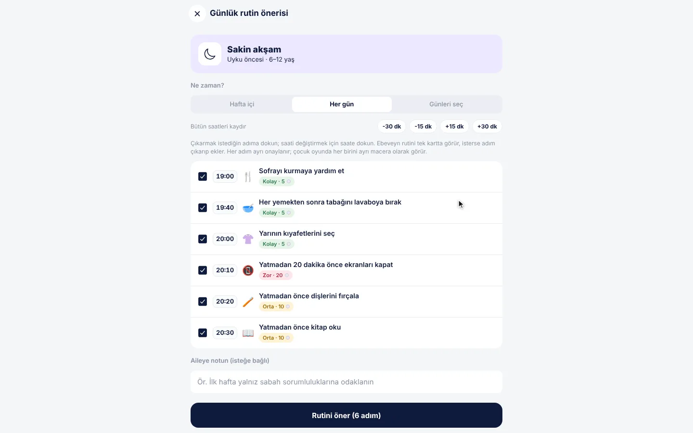
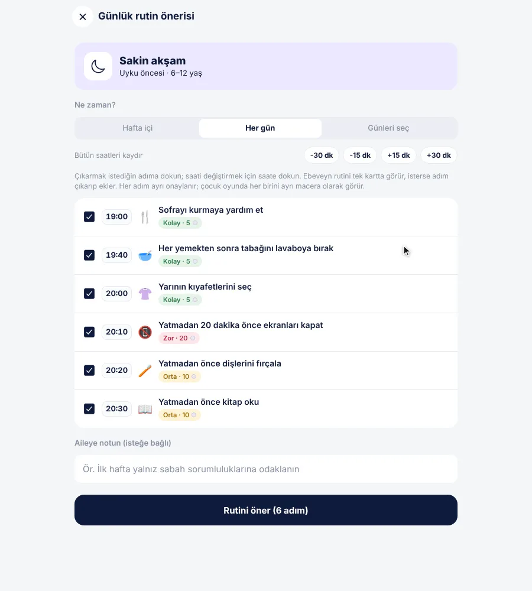
Örnek veri
Moyo Ebeveyn · ebeveynin telefonunda
Öneri ebeveynin telefonuna gider
Ebeveyn önerinizi Moyo Ebeveyn'de görür, rutini ekler. Çocuğun yaptığı adımı onaylar, zorlandığı anı kaydeder. Hatırlatmayı uygulama yapar; siz başlatır ve takip edersiniz.
Moyo MercekMoyo Ebeveyn
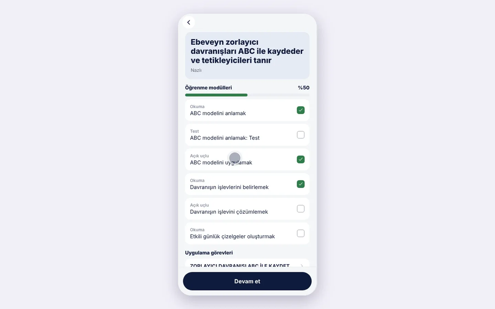
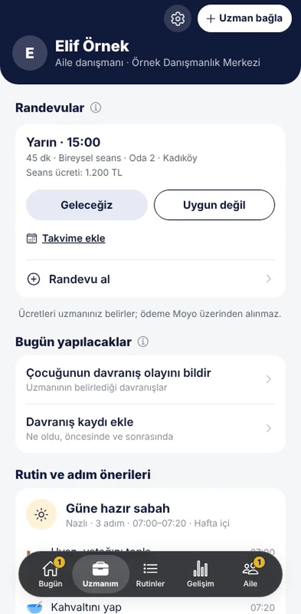
Örnek veri
Moyo Ebeveyn → Moyo Mercek
Evde olanı davranış kayıtlarıyla görün
Ebeveynin tuttuğu davranış kayıtları öncül, davranış, sonuç, uygulanan strateji ve çocuğun tepkisiyle panelinize gelir; hedef davranış başına bir tabloda toplanır.
Moyo EbeveynMoyo Mercek
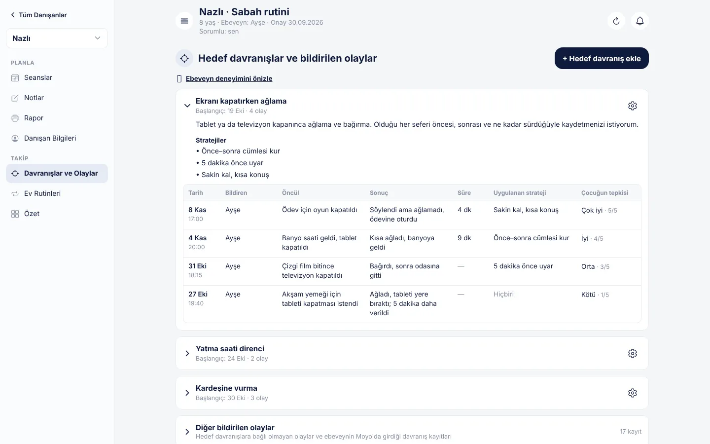
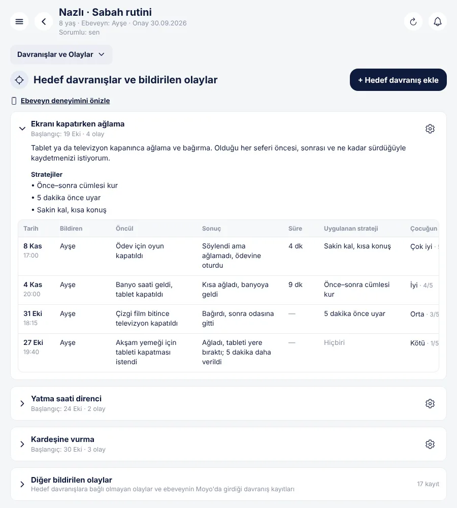
Örnek veri
Moyo Mercek · takvim
Seansa evden gelen kayıtlarla hazırlanın
Seanslarınız, odanız ve seans ücretiniz takvimde. Seansı açınca son seanstan bu yana rutin tamamlama, davranış kayıtları ve "Yapamam" nedenleri hazır; gündeminizi ve notunuzu yalnızca siz görürsünüz. Seansı aileye gösterirseniz ebeveyn randevuyu ve ücreti Moyo Ebeveyn'de görür; ödeme Moyo üzerinden alınmaz.
Moyo Mercek
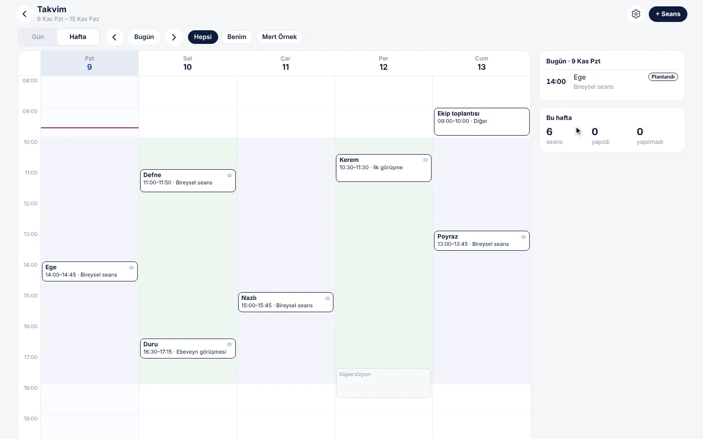
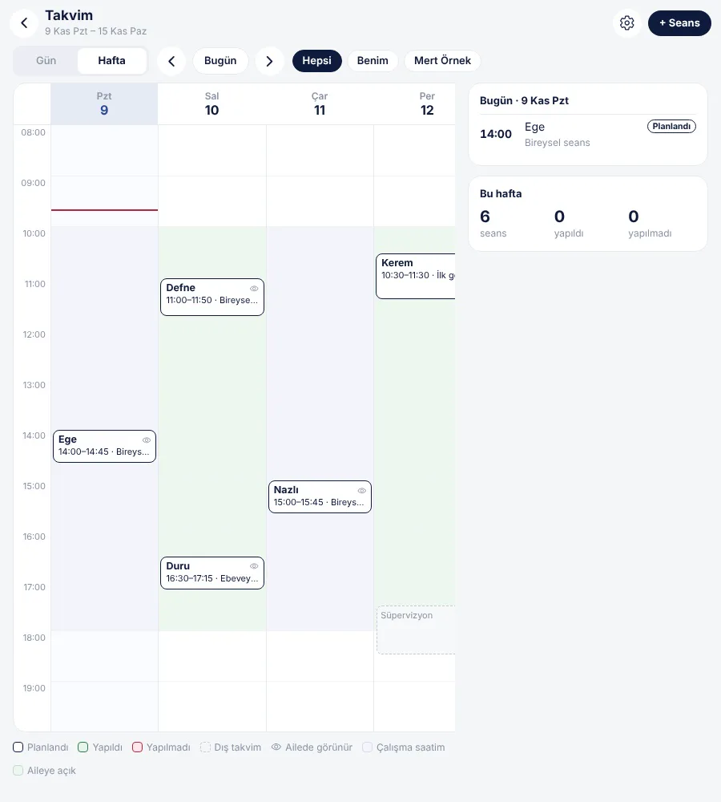
Örnek veri
Moyo Mercek → Moyo Ebeveyn
Raporu aileye gönderin
Dönemin raporu ebeveynin kayıtlarından hazır gelir: haftalık rutin kartı, adım tabloları, davranış kaydı özeti. Gözden geçirip "Aileye gönder"e dokunursunuz; rapor Moyo Ebeveyn'de açılır. İlerleme notunu kopyalayıp kendi kaydınıza da ekleyebilirsiniz.
Moyo MercekMoyo Ebeveyn
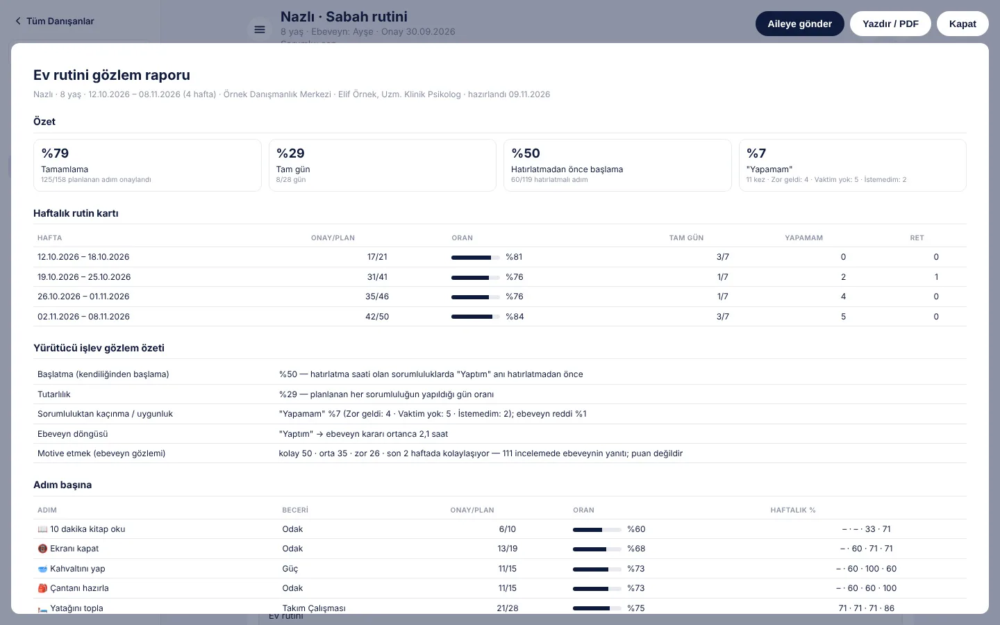
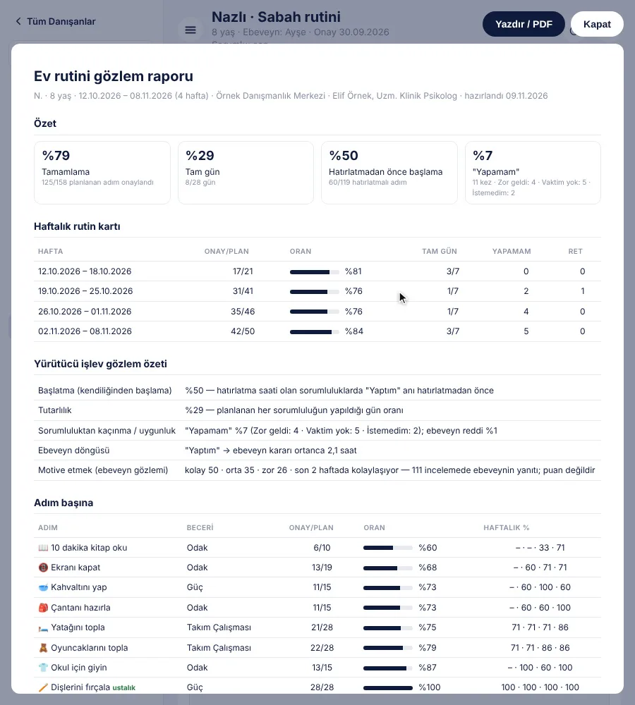
Örnek veri
Moyo Oyun · çocuğun tabletinde
Çocuk rutinini yapar, oyunda işaretler
Aile rutini Moyo Ebeveyn'de çocuğun gününe planlar ya da sizin önerinizi ekler. Oyun her adımı hatırlatır ve küçük bir macera olarak gösterir; çocuk adımı yapınca "Yaptım"a dokunur, ebeveyn onaylar. Oyunu aile yönetir.
Moyo EbeveynMoyo Oyun
Örnek veri
Bütün danışanlar
Evden ne geldi? Bir bakışta görün.
Ebeveynden yeni kayıt gelenleri ve bir süredir kaydı gelmeyenleri ayrı ayrı görürsünüz; klinik sahibiyseniz ekibin ailelerini uzmana göre süzersiniz.
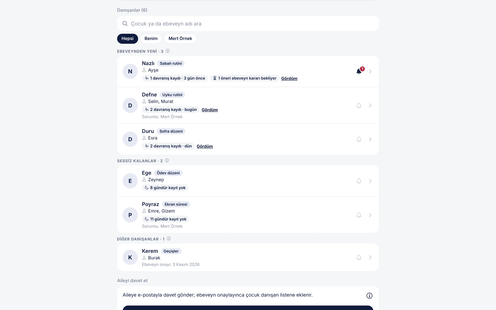
Örnek veri
Kimler için
Ev rutiniyle çalışan her uzman.
Psikolog
Çocuk ve ergen psikiyatristi
Davranış analisti (BCBA)
Özel eğitim öğretmeni
Oyun terapisti
Psikolojik danışman (PDR)
Ergoterapist
Çocuk doktoru (pediatri)
Koç (ebeveyn koçu)
Klinik psikolog
Dil ve konuşma terapisti
Okul rehber öğretmeni
Gelişimsel pediatri uzmanı
Sanat terapisti
Davranış teknisyeni (RBT, ABA uygulayıcısı)
Aile ve çift terapisti (aile danışmanı)
Okul psikoloğu
Çocuk ve ergen terapisti
Çocuk gelişimci
Psikiyatri hemşiresi
Müzik terapisti
Ergoterapi teknikeri
Sosyal hizmet uzmanı
Öğretmen (sınıf ya da branş)
Drama terapisti (psikodrama)
Sık sorulanlar
Kısaca
Aile Moyo kullanmıyorsa?
Davet e-postası kurulumu anlatır. Ebeveyn çocuğunu ekler ve paylaşımı onaylar.
Ebeveyn paylaşımı durdurursa?
Çocuğun verisine erişiminiz o an biter. Kendi notlarınız klinikte kalır.
Hangi cihazlarda çalışır?
Moyo Mercek web'de, iPad'de ve iPhone'da çalışır. Aynı hesapla hepsinde oturum açarsınız.
Ödeme nereden yapılır?
iPhone ya da iPad'deki Moyo Mercek'ten, App Store ile. Web'den satın alınmaz; aldığınız üyelik web panelinde de geçerlidir. Deneme bitince hiçbir şey silinmez. Paketler ve fiyat
Bireysel çalışıyorum, klinik açmam gerekir mi?
Hayır. Kayıtta "Bireysel uzman"ı seçin. Ekibiniz olursa Klinik paketine geçersiniz.
Ekipte kim neyi görür?
Uzman kendi davet ettiği ve kendisine atanan aileleri görür. Klinik sahibi hepsini görür.
Tanı koyar ya da puan verir mi?
Hayır. Göstergeler ev rutininin gözlem özetidir; karar uzmanındır.
Ebeveyn misiniz?
Uzman hesabı açmanız gerekmez. Daveti Moyo Ebeveyn'de açın: Aile › Hesap › Kod gir.
Seans dışı çalışmayı tek yerden yönetin.
Ev rutinlerinden davranış kayıtlarına, seans takviminden aileye giden rapora kadar tüm süreci Moyo Mercek'te yönetin.

 Moyo Mercek
Moyo Mercek